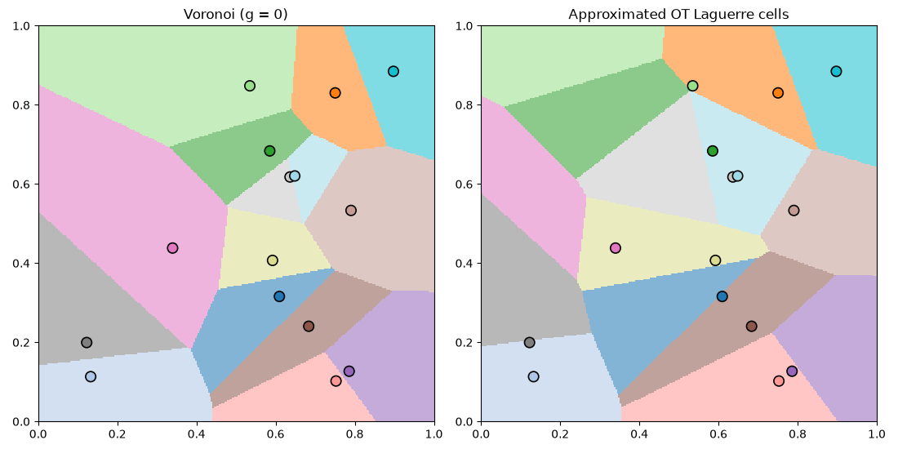
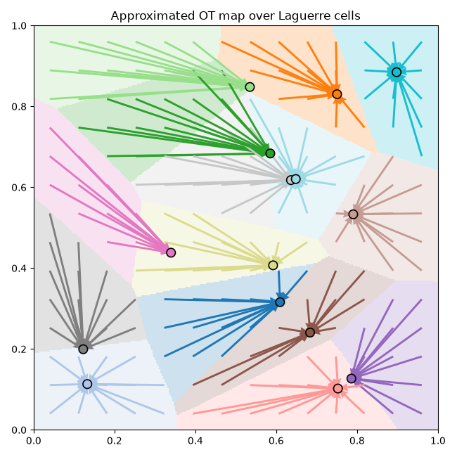
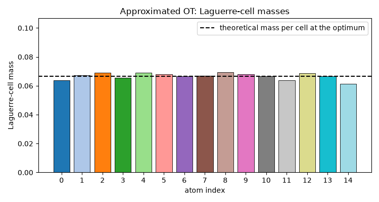

Note
Go to the end to download the full example code.
Semi-discrete OT: a toy 2D problem
This example shows the ot.semidiscrete solver on a small 2D problem:
a uniform source on \([0, 1]^2\) and 15 random target atoms with uniform
weights. With so few atoms the Laguerre cells can be drawn by brute force on
a grid.
We call ot.semidiscrete.solve_semidiscrete() with its default
arguments: the underlying algorithm is Projected Averaged SGD, and the
default decreasing_reg=True adds the DRAG entropic-regularization
schedule of [90], which improves convergence.
For the returned potential \(g\) we report:
the empirical Laguerre-cell masses (mean and max absolute deviation from \(1/15\));
the semi-dual objective \(\langle g, b\rangle + \mathbb{E}_X[\varphi_g(X)]\) estimated by Monte Carlo, where the c-transform \(\varphi_g(x) = \min_j\big(c(x, y_j) - g_j\big)\) is computed by
ot.semidiscrete.semidiscrete_c_transform(). The solver maximises this objective.
# Author: Ferdinand Genans <genans.ferdinand@gmail.com>
#
# License: MIT License
# sphinx_gallery_thumbnail_number = 1
import numpy as np
import matplotlib.pyplot as plt
from ot.semidiscrete import (
solve_semidiscrete,
semidiscrete_atom_weights,
semidiscrete_c_transform,
semidiscrete_ot_map,
)
Toy 2D problem
rng = np.random.default_rng(42)
def source_sampler(batch_size):
return rng.random((batch_size, 2))
n_atoms = 15
target_positions = 0.1 + 0.8 * np.random.default_rng(0).random((n_atoms, 2))
def plot_laguerre_cells(target, g, ax, title, resolution=300, alpha=0.55):
xs = np.linspace(0, 1, resolution)
ys = np.linspace(0, 1, resolution)
XX, YY = np.meshgrid(xs, ys)
grid = np.stack([XX.ravel(), YY.ravel()], axis=1)
labels = semidiscrete_atom_weights(target, grid, g, reg=0.0).argmax(axis=1)
image = labels.reshape(resolution, resolution)
cmap = plt.get_cmap("tab20", target.shape[0])
ax.imshow(
image,
origin="lower",
extent=(0, 1, 0, 1),
cmap=cmap,
alpha=alpha,
vmin=-0.5,
vmax=target.shape[0] - 0.5,
interpolation="nearest",
)
# Target points share the colour of their Laguerre cell.
ax.scatter(
target[:, 0],
target[:, 1],
s=80,
c=[cmap(i) for i in range(target.shape[0])],
edgecolor="black",
linewidths=1.2,
zorder=3,
)
ax.set_title(title)
ax.set_aspect("equal")
ax.set_xlim(0, 1)
ax.set_ylim(0, 1)
Solve and visualise
A single call to solve_semidiscrete() runs DRAG with the default
arguments (decreasing_reg=True). We show the initial Voronoi cells
(\(g = 0\)) next to the Laguerre cells at the optimum.
With the squared-Euclidean cost (default metric='sqeuclidean'), the cost
between a source point in \([0, 1]^2\) and an atom is
\(\|x - y\|^2 \le 2\). We clip the potential to
[-max_cost, max_cost] = [-2, 2], the localizing set where an optimal
potential lies ([90], Lemma 1), which speeds up convergence.
g_drag = solve_semidiscrete(
target_positions,
source_sampler,
max_iter=20_000,
batch_size=32,
max_cost=2.0,
)
fig, axes = plt.subplots(1, 2, figsize=(11, 5.5))
plot_laguerre_cells(target_positions, np.zeros(n_atoms), axes[0], "Voronoi (g = 0)")
plot_laguerre_cells(target_positions, g_drag, axes[1], "Approximated OT Laguerre cells")
plt.tight_layout()
plt.show()

Transport map over the Laguerre cells
semidiscrete_ot_map() with reg=0 is the hard Monge map: every
source point is sent to the atom of its Laguerre cell. Overlaying the map
(arrows on a source grid) on the faded cells shows each cell’s mass
collapsing onto its atom – a direct illustration of the mapping function.
gx = np.linspace(0.04, 0.96, 14)
grid = np.stack([a.ravel() for a in np.meshgrid(gx, gx)], axis=1)
mapped = semidiscrete_ot_map(target_positions, grid, g_drag, reg=0.0)
labels = semidiscrete_atom_weights(target_positions, grid, g_drag, reg=0.0).argmax(
axis=1
)
cmap = plt.get_cmap("tab20", n_atoms)
fig, ax = plt.subplots(figsize=(6.5, 6.5))
plot_laguerre_cells(
target_positions, g_drag, ax, "Approximated OT map over Laguerre cells", alpha=0.22
)
ax.quiver(
grid[:, 0],
grid[:, 1],
mapped[:, 0] - grid[:, 0],
mapped[:, 1] - grid[:, 1],
angles="xy",
scale_units="xy",
scale=1,
width=0.005,
headwidth=4,
headlength=5,
color=[cmap(i) for i in labels],
zorder=2,
)
plt.tight_layout()
plt.show()

Cell masses and Monte Carlo cost
At the optimum each Laguerre cell should carry mass \(1/15\). We report the empirical mass error and the semi-dual objective
estimated by Monte Carlo. The solver maximises \(\mathcal{S}\).
def cell_masses(target, g, sampler, n_samples=100_000):
labels = semidiscrete_atom_weights(target, sampler(n_samples), g, reg=0.0).argmax(
axis=1
)
counts = np.bincount(labels, minlength=target.shape[0])
return counts / n_samples
def mc_cost(target, g, sampler, n_samples=100_000):
b = np.full(target.shape[0], 1.0 / target.shape[0])
samples = sampler(n_samples)
return float(g @ b + semidiscrete_c_transform(target, samples, g, reg=0.0).mean())
target_mass = 1.0 / n_atoms
m_drag = cell_masses(target_positions, g_drag, source_sampler)
cost_drag = mc_cost(target_positions, g_drag, source_sampler)
print(f"Target mass per cell: {target_mass:.4f}")
print(
f"DRAG — mean abs. mass error: "
f"{np.mean(np.abs(m_drag - target_mass)):.4f}"
f" max: {np.max(np.abs(m_drag - target_mass)):.4f}"
f" semi-dual cost (MC): {cost_drag:.5f}"
)
Target mass per cell: 0.0667
DRAG — mean abs. mass error: 0.0017 max: 0.0054 semi-dual cost (MC): 0.04572
Laguerre-cell masses
At the optimum every cell carries the same mass \(1/15\). The bar plot shows the empirical mass per cell against this ground truth (dashed line): every cell sits close to the theoretical value.
cmap = plt.get_cmap("tab20", n_atoms)
fig, ax = plt.subplots(figsize=(7.5, 4))
ax.bar(
np.arange(n_atoms),
m_drag,
color=[cmap(i) for i in range(n_atoms)],
edgecolor="black",
linewidth=0.6,
)
ax.axhline(
target_mass,
ls="--",
color="black",
lw=1.5,
label="theoretical mass per cell at the optimum",
)
ax.set_ylim(0, 1.6 * target_mass)
ax.set_xticks(np.arange(n_atoms))
ax.set_xlabel("atom index")
ax.set_ylabel("Laguerre-cell mass")
ax.set_title("Approximated OT: Laguerre-cell masses")
ax.legend()
plt.tight_layout()
plt.show()

Total running time of the script: (0 minutes 7.223 seconds)